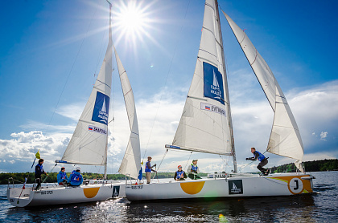
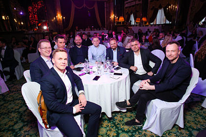

ЧЕМПИОНАТ МОСКОВСКОЙ ОБЛАСТИ ПО МАТЧ-РЕЙСУ 2022
Опубликовано 04 мая 2022, 15:03

Парусная Академия» провела Чемпионат Московской области по матчевым гонкам. Соревнования
получили 4 грейд и ознаменовали начала сезона Клуба матчевых гонок.
Участие в Чемпионате приняли восемь команд из Москвы, Московской области, Саратова,
Екатеринбурга и Новомосковска.
ИНТЕЛЛЕКТУАЛЬНАЯ БИТВА "ДЕВЕЛОПЕРЫ ПРОТИВ СТРОИТЕЛЕЙ"
Опубликовано 22 июня 2022, 02:59

16 июня 2022 года состоялся первый корпоративный IQ чемпионат строительной индустрии.
Интеллектуальная битва в формате игры «Что? Где? Когда?» проходила под эгидой объединения
девелоперов с работниками сферы строительства: архитекторами, дизайнерами и проектировщиками.
Победили, однако, отнюдь не застройщики, а команда «СМИ и блогеры».
Участие в битве приняли более 150 человек в составе нескольких команд.